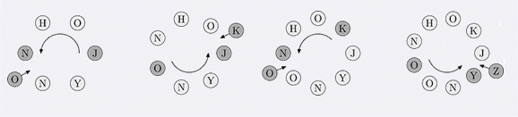

Game Johnny最近在玩报数游戏，首先他把一些字母先成一个圈，然后他选择其中一个字母作为开始的位置，逆时针报数，每报到k，则考察当前的字母，把当前字母的下一个字母插入在当前的下一个位置中，举个例子，比如当前的字母是A，则把B插入当前的位置之后，如果当前的字母是C，则把D插入当前位置之后，如果当前位置是Z，则把A插入当前位置之后，并从插入的位置接着报数。如下图。  初始时，JOHNNY构成一个圈，J是起点，K=3。 现在的任务是给出M，求第M个添加进圈里的元素是什么。
| F.A.Qs | Home | Discuss | ProblemSet | Status | Ranklist | Contest | 入门OJ | ModifyUser Xeonacid | Logout | 捐赠本站 |
|---|